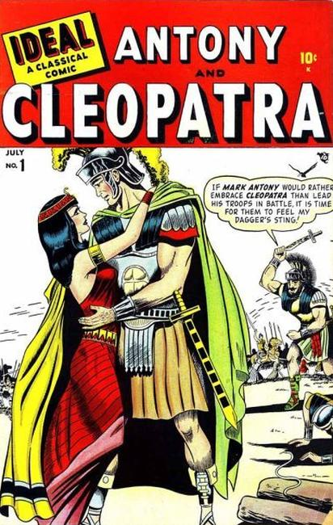

1944: Becomes Willy Comics with #5 in 1946.

1948: "Antony and Cleopatra." Two-page text story, "The Observant Killer." One-page Tootsie Roll ad, "Captain Tootsie Traps Killer Bear with Invisible Light" by C.C. Beck and Pete Costanza. Becomes Love Romances with issue #6.